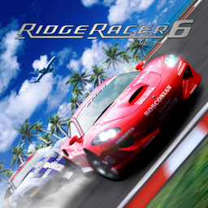

rr6-nx web installer

Builds the Nintendo Switch package of Ridge Racer 6 from your own copy. Everything runs in this browser: nothing is uploaded.
version 1.0.01. Choose your game
Your Xbox 360 disc of Ridge Racer 6 as an .iso, or the folder it was extracted to (with
default.xex and the RRM.DAT, RRM2.DAT and RRM3.DAT archives in it).
Nothing chosen yet.
2. Add the DLC (optional)
Ridge Racer 6's downloadable content (music packs, cars), as the Xbox 360 packages you have
(LIVE or PIRS files), or a folder of them. The game installs them at its first start.
None.
3. Create the package
The three RRM archives are packed with LZ4 (level 9, 256 KB blocks) on all of this computer's cores: about 600 MB smaller on the SD card, and read as they were by the game. The zip downloads while it is written (about 5.5 GB, more with the DLC).
4. Copy it to the Switch
- If you have an older rr6-nx, delete its
switch/rr6-nx/game_rootfolder first: an unpackedRRM.DATleft there is used instead of the packed one, and saves nothing. - Extract
rr6-nx.zipto the root of the SD card: it makesswitch/rr6-nx/. - In Sphaira, find Ridge Racer 6, press X to open Options and choose Install Forwarder. Make sure Address Space is set to 39-bit, choose Create Forwarder, then start the game from the Home Screen.
- Your options are in
switch/rr6-nx/config.toml: the language, SMAA, MSAA, rumble, the DLC's car Unlock Keys and the controls. Every other setting is built into the game.